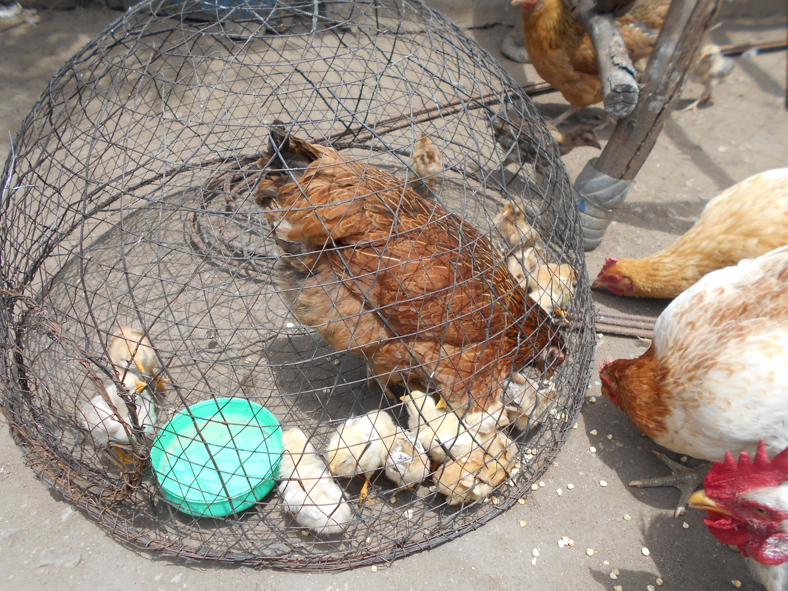
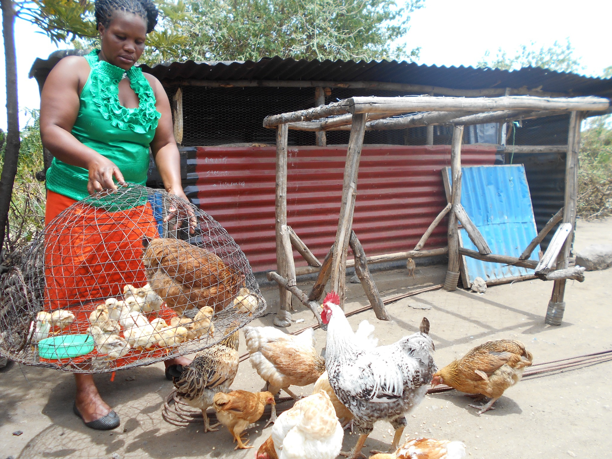
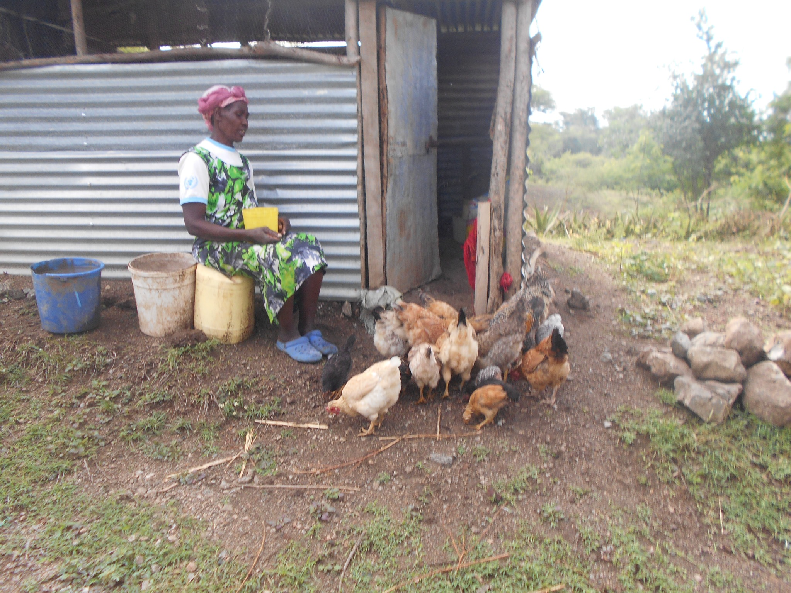

Ubuntu Poultry Farming began with an initial group of 15 women in Kamayoge Village and Luore Center. KWEPU provided small amounts of start-up capital alongside practical poultry-farming knowledge so participants could establish household poultry activities.
Founding women
The first group began the revolving model and put practical poultry knowledge into action.
Revolving support
After participants establish their activities, the agreed start-up funds are returned so another group of women can receive the same opportunity.
Long-term goal
Grow toward a women-led cooperative-style enterprise that strengthens food security, livelihoods and local job opportunities.
From knowledge to self-reliance
The programme combines practical learning, responsibility and access to modest start-up capital. Women apply the knowledge they gain by raising poultry at household level, building productive experience that can support family food security and income-generating opportunities.
Ubuntu means progress that is shared: as one group becomes established, the same resources can create an opportunity for another.
Programme in practice



Vision for partnership
KWEPU’s long-term vision is to develop Ubuntu Poultry Farming toward a strong, cooperative-style women-led enterprise. Partnership can help expand the revolving fund, strengthen poultry housing and production, improve technical training and animal-health support, develop market access and create pathways to employment.
Until a cooperative is formally established, KWEPU describes this as a cooperative-style vision rather than a registered cooperative.
Partner with Ubuntu Poultry Farming
Help KWEPU scale a working community model into a stronger platform for women’s economic participation, food security and sustainable livelihoods.
Start a partnership conversation